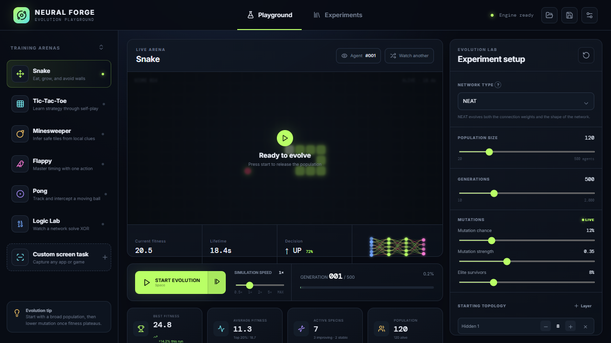

Real neuroevolution
Forward passes, selection, crossover, elitism, species, and weight mutations—not decorative numbers.
WINDOWS APP + BROWSER GAME
A visual neural-network evolution playground where populations learn Snake, Pong, Breakout, Lunar Lander, adversarial mazes, and more.

THE LAB IS YOURS
Change the topology, mutation pressure, population, acceleration, and reward. Every generation is visible.
Forward passes, selection, crossover, elitism, species, and weight mutations—not decorative numbers.
Dense, recurrent, LSTM, GRU, convolutional, spiking, liquid, attention, and reservoir-style brains.
Earn Forge Points, levels, streaks, and temporary 3× boosts while controlling generation acceleration.
Draw a maze or evolve one neural architect against another population trying to solve it.
Select a window, observation region, allowed controls, and visual reward signal in the desktop app.
Store every generation champion, jump backward or forward, select best-ever or latest, and inspect its exact observation, action, fitness, weights, and activations without fake looping gameplay.
TRAINING ARENAS
READY TO EVOLVE?
Your browser progress stays on this device. Install the Windows edition for desktop capture, project files, timed multi-move episodes, and verified in-app updates.